La règle de trois s’applique particulièrement aux habitants des plans extérieurs, de par la double triade Bien Neutralité Mal et Loi Neutralité Chaos, qui organise la plupart des êtres natifs des plans extérieurs. S’il existe des nuances le long de ces deux axes, les neuf plans les plus tranchés ont chacun donné naissance à une race d’immortels planaires.
On désigne par le terme de fiélons les planaires natifs des plans inférieurs. Ces êtres se livrent une guerre sans relâche qui dure depuis la nuit des temps, la Guerre Sanglante, opposant la Loi au Chaos, les Diables aux Démons, pour le contrôle des plans inférieurs, sous l’oeil attentif des neutres Damnés.
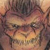 Les diables, ou baatezus, Loyaux Mauvais, originaires des Neuf enfers de Baator, sont des fiélons tyranniques et retors. Ils ont pour habitude de tirer partie des lois, en détournant l’esprit pour s’appuyer sur la lettre. Hiérarchisés, planificateurs et méthodiques, ils piègent les mortels dans des contrats iniques leur coûtant leur âme pour de maigres avantages. Si l’on excepte les Seigneurs des Enfers qui règnent sur chacune des strates de Baator, tels que Bel, Asmodée, ou Belzebuth, les plus puissants d’entre eux sont les diantrefosses, généraux de leurs armées de terreur.
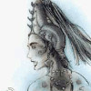 Face à eux, les Démons, ou tanar’ri, issus des Abysses, Chaotiques Mauvais, sont une incarnation de la violence, de l’instinct meurtrier et de la perversité. Suivant leurs moindre désirs, ils infligent moultes souffrances, torturant leurs adversaires physiquement comme psychologiquement. Ils sont de formes plus variées que leurs adversaires, et comptent un certain nombre de Prince-Démons de grande puissance en leur sein, telle que Grazz’t, Demogorgon ou Juiblex. Leur plus puissants généraux sont les puissants balors et les rusées mariliths. Ils tentent les mortels par leurs désirs de luxure ou de pouvoir, utilisant pour cela succubes et incubes, mais aussi les glabrezu, qui offrent leurs secrets aux plus puissants mages.
Entre ces deux camps, servant de mercenaires pour l’un ou l’autre, on trouve les Damnés, ou Yugoloths, fiélons Neutres Mauvais. Leur plus bas rangs sont des machines à tuer pouvant changer le cours d’un bataille, mais leur vraie puissance provient de ceux d’entre eux qui tiennent les comptes. 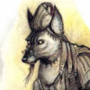 Les arcanoloths, fiélons à tête de chacal qui proposent les services de mercenaires aux deux camps, sont en particulier suspectés d’être des maîtres-manipulateurs hors-pairs, tirant en réalité toutes les ficelles de la Guerre Sanglante. Et encore, leur intelligence est censée pâlir en comparaison de celle des ultroloths qui dirige l’ensemble des yugoloths.
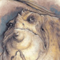 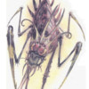Il existe bien d’autres fiélons, tels que les Gehreleth, être difformes natifs des Carcères, vouant une haine implacable aux Yugoloths, les Démombres, ombres spectrales se nourrissant d’âmes, les Guénaudes, sorcières commerçant leur art, poisons et denrées à travers les plans inférieurs, ou encore les Bebiliths, monstrueuses araignées abyssales, seul prédateur connu des tanar’ris. Une liste exhaustive parait superflue, mais n’hésitez pas à me demander si vous avez besoin de quelques renseignements.
Fort heureusement, les fiélons ne sont pas les seuls planaires. De même qu’il y a des incarnations du Mal, il y en a aussi du Bien, de la Loi, du Chaos ou de l’Equilibre. Les célestes sont le pendant Bon des fiélons. Ces êtres issus des plans supérieurs ont aussi des avis partagés sur la Loi et le Chaos, mais leur désaccord s’expriment moins violemment. Parangons de vertu, les Archons sont natifs des Sept Ciels du Mont Céleste, le plan Loyal Bon. D’apparences diverses selon leur place dans la hiérarchie, des compatissants archons lanternes, vivaces boules de lumière douce, aux majestueux archons trônes, dont l’altière silhouette se nimbe d’une puissante aura, ils ont tous pour vocation de guider les mortels et suppliants vers la Vertu. 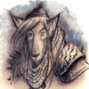 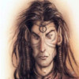 Les gardinaux, issus de l’Elysée, sont de farouches défenseurs du Bien, opposants de toute forme de Mal, protecteurs dont les formes animales indiquent la spécialité, des érudits ursinaux, au visage d’ours, aux vifs et discrets avoraux, aux traits aquilins. Plus penchés vers le chaos, les eladrins aux traits féériques s’imprègnent des passions d’Arborée, protégeant la liberté, l’art et l’expression individuelle à travers les plans. A ces planaires natifs des plans supérieurs s’ajoute les aasimons, souvent appelés anges, qui arborent bien souvent de puissantes ailes au dos de corps humanoïdes de proportions parfaites. Ces derniers sont les serviteurs des puissances du Bien, accomplissant la volonté de leur divinité dans les plans qu’ils parcourent.
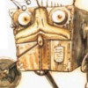 Enfin, cet aperçu des races planaires majeures ne serait être complet sans mentionner les races planaires médianes, qui ne penchent ni vers le Bien, ni vers le Mal. Du côté de la Loi, on trouve les modrons de Mechanus, êtres de Loi pure à l’aspect mécanique, dont les rouages et les chairs forment un assemblage rigoureux et immuable indiquant clairement leur position dans la stricte hiérarchie qui les régit. 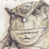 Du chaos des Limbes sont nés les Slaadi, créatures violentes, indisciplinées et profondément individualistes, dont l’aspect général batracien varie en couleur et en taille d’un individu à l’autre. En Outreterre, au centre de tout cela, maintenant l’Equilibre des plans en préservant la Neutralité, se trouvent les Rilmanis, immortels gardiens de la Neutralité Stricte, revêtant l’apparence d’humanoïdes à la peau métallique.
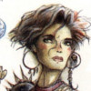 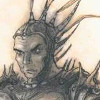 Mais depuis les origines, la population des plans s’est diversifiée, et l’on ne trouve pas que des immortels planaires ou des suppliants dans ces derniers. De nombreux humains se sont répandus dans les plans extérieurs, devenant eux-mêmes, au fil des générations, des êtres planaires de plein droit. Les croisements ne sont pas non plus rares, et l’influence d’un immortel planaire dans une lignée est persistante, et l’on trouve ainsi de nombreux aplanis, le nom que l’on donne aux descendants mortels d’un habitant des plans non primaires. 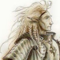 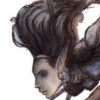 Ainsi les tieffelins, descendants de fiélons, gardent de leur ancêtres des traits souvent flagrants, et suscitent une méfiance dont il faut bien avouer qu’elle est souvent justifiée. A l’inverse, leurs cousins célestes, les aasimars, dotés de caractéristiques angéliques leur conférant une aura de vertu, sont les bienvenus partout à l’exception des plans inférieurs. 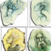 On trouve aussi parfois quelques raretés, comme les descendants de races élémentaires primales des plans intérieurs, qui gardent une affinité forte avec leur élément (ou quasi-élément), qu’on appelle genasi. Affilés à l'eau, l'air, le feu où la terre, ces derniers peuvent également être issus de l'union d'humains avec des génies élémentaires du plan primaire, mais les versions planaires de ces êtres sont toutefois légitimement plus répandues en nos contrées. De très rares spécimen de Genasi combinant deux éléments (comme la vapeur, la glace, le magma ou la fumée pour ne citer qu'eux.) peuvent être croisés. On les nomme alors Para-Genasi.
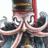Les humains ne sont pas les seuls à s’être répandus dans les plans, cependant. Et on notera en particulier la migration célèbre d’un peuple oublié, anciens esclaves des Illithids, où flagelleurs mentaux, dont la rébellion a disloqué le puissant empire de ces êtres tentaculaires. Un différent sur la conduite à tenir après avoir vaincu leurs anciens maîtres a divisé cette race d’humanoïde à la peau jaune pâle en deux blocs : 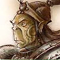 Les premiers, les Githyanki, fidèles à leur intransigeante libératrice Gith, sont devenus un peuple militaire et farouche, désireux de prendre la place de leur anciens maîtres, et prompte à conquérir, dominer ou oppresser ceux qu’ils avaient libérés. Il se sont installés dans le plan astral. 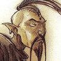 Leurs opposants à l’esprit rebelle et libertaire toujours aussi vivace, représentés par Zerthimon, se sont installés dans l’environnement hostile des Limbes. Ce sont les austères Githzerai, qui depuis leur relative réclusion, continuent toujours de s’opposer à toute forme d’esclavage. 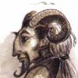 On pourrait aussi mentionner les Bariaurs, peuple quadrupède demi-homme mi-bouc, dont les tribus parcourent les plaines d’Outreterre et d’Ysgard, ou bien les Khaasta, lézards humanoïdes aux traitresses phéromones, qui commercent volontiers avec les plans inférieurs.
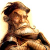 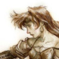 Enfin, pour finir notre panorama, il est bon de rappeler que les nombreuses races originaires du plan matériel primaire ne restent pas toujours sur leur petit bout de plan. On trouve aussi dans Sigil nombre de Paumés, ignorant de la plupart des coutumes planaires, arrivés volontairement ou non au gré de quelque portail. Si les humains changent de nature en quelques générations, ce n’est pas le cas des elfes ou des nains, par exemple. 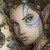 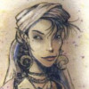 Les débrouillards et aventureux halfelins se retrouvent facilement happés par quelques portails et il y en a un certain nombre à Sigil, ainsi que de leur cousins de Krynn, les kender, dont l’apparence enfantine cache une habilité redoutable et une absence totale de peur qui, couplée à une curiosité maladive, aboutit souvent à une mort précoce. Mais je disgresse. Ce long exposé de la population des plans n’est sans doute pas ce qu’il est le plus important de vous remémorer. Veuillez excusez les radotages d’un passionné. Enfin, j’espère que ce long détour vous aura au moins permis de reprendre vos esprits.